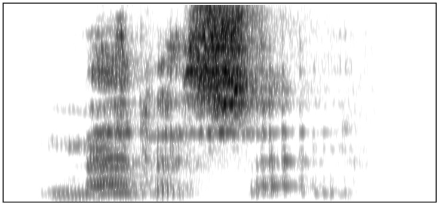
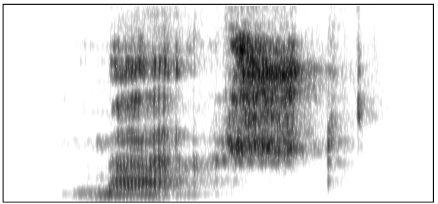

Note that this image is somewhat distorted because of the manual changes we made to the audio. This is what the original piece of speech looks like (corresponding to the far left end of the slider):
Speakers of American English
"Medicine"

Frequency at blue line: 0 Hertz
"Madison"
Frequency at blue line: 0 Hertz
"Celery"
Frequency at blue line: 0 Hertz
"Salary"
Frequency at blue line: 0 Hertz
"Pedaling"
Frequency at blue line: 0 Hertz
"Paddling"
Frequency at blue line: 0 Hertz
"Lettuce"
Frequency at blue line: 0 Hertz
"Lattice"
Frequency at blue line: 0 Hertz
"Adept"
Frequency at blue line: 0 Hertz
"Adapt"
Frequency at blue line: 0 Hertz
"Reddish"
Frequency at blue line: 0 Hertz
"Radish"
Frequency at blue line: 0 Hertz
"Pellet"
Frequency at blue line: 0 Hertz
"Palate"
Frequency at blue line: 0 Hertz
"Trekking"
Frequency at blue line: 0 Hertz
"Tracking"
Frequency at blue line: 0 Hertz
"Left"
Frequency at blue line: 0 Hertz
"Laughed"
Frequency at blue line: 0 Hertz
"Heckles"
Frequency at blue line: 0 Hertz
"Hackles"
Frequency at blue line: 0 Hertz
"Rebel"
Frequency at blue line: 0 Hertz
"Rabble"
Frequency at blue line: 0 Hertz
"Kettle"
Frequency at blue line: 0 Hertz
"Cattle"
Frequency at blue line: 0 Hertz
"Flex"
Frequency at blue line: 0 Hertz
"Flax"
Frequency at blue line: 0 Hertz
"Kelvin"
Frequency at blue line: 0 Hertz
"Calvin"
Frequency at blue line: 0 Hertz
"Blessed"
Frequency at blue line: 0 Hertz
"Blast"
Frequency at blue line: 0 Hertz
"Techie"
Frequency at blue line: 0 Hertz
"Tacky"
Frequency at blue line: 0 Hertz
"Neck"
Frequency at blue line: 0 Hertz
"Knack"
Frequency at blue line: 0 Hertz
"Letter"
Frequency at blue line: 0 Hertz
"Ladder"
Frequency at blue line: 0 Hertz
"Meshed"
Frequency at blue line: 0 Hertz
"Mashed"

Frequency at blue line: 0 Hertz
"Better"
Frequency at blue line: 0 Hertz
"Batter"
Frequency at blue line: 0 Hertz
Here ends the first chunk of audio
Now we need to figure out how to determine p(duration) based on these examples. To start out, just to get a feeling for the distribution of examples, let's try plotting histograms of the observed durations. Click "make histograms" to generate histograms for each of the four cases.
These histograms are almost enough. In fact we could use them. But better to use a probability density function:
Now that we have these distributions, we can figure out the probability of the duration observed in our mystery clip arising from "planetary" or "plant a tree". Below is the spectrogram of our mystery clip. Use it to determine the duration of the relevant portion of the word.
Mystery recording
Frequency at blue line: 0 Hertz
Enter the duration that you measured:
Duration of relevant portion:
Now click this button to compute the relevant probabilities from the PDFs you generated above:
Unnormalized p(duration | "planetary") for an American speaker:
Unnormalized p(duration | "plant a tree") for an American speaker:
Unnormalized p(duration | "planetary") for a British speaker:
Unnormalized p(duration | "plant a tree") for a British speaker:
There is one other aspect we will consider for computing the likelihood. Notice how, in the clip we are trying to figure out, there is no "t" sound at the end of the first syllable. If the utterance is "planetary", that is completely expected, since the word is "planetary", not "plantetary". However, if it is "plant a tree", then this utterance could only arise if the speaker had omitted the "t" sound from "plant", making the utterance sound more like "plan a tree." Therefore, if we wish to figure out the likelihood of the utterance being "plant a tree", we have to factor in the odds of the "t" being dropped from "plant".
As it turns out, speakers of English often do drop the "t" sound (or the "d" sound) from the ends of English words. It is a well-studied phenomenon known as t/d-deletion. Because there already exists literature on this subject, we will draw our estimates of p(t is omitted) from past research.
Guy (1991) studied t/d-deletion in American English; the table below summarizes his findings about the frequency of this deletion for various types of words:
Using these tables, enter p(t is deleted | "plant") for British speakers and American speakers in the slots below. Make sure to choose the right numbers from these tables - you might want to look up "monomorpheme."
p(t is deleted | "plant") for an American speaker:
p(t is deleted | "plant") for a British speaker:
Now we can compute the full likelihoods. Enter them into the cells below. Your likelihoods should factor in both the length of the relevant portion of audio and the probability of deleting the 't'; assume that these two probabilities are independent.
p(observed audio clip | "planetary") for an American speaker:
p(observed audio clip | "plant a tree") for an American speaker:
p(observed audio clip | "planetary") for a British speaker:
p(observed audio clip | "plant a tree") for a British speaker:
Now that we have computed the likelihoods, the final ingredient we need for Bayes' Theorem is the prior probabilities. (Recall that we can ignore the normalizing factor). To estimate the prior probabilities, we will use corpora. We will state that p(planetary) is the proportion of sentences in the corpus in which the word "planetary" appears, while p(plant a tree) is the proportion of sentences in the corpus in which the phrase "plant a tree" appears. Much as whether the speaker is British or American affects how his or her likelihood estimate, the speaker's experience can also affect his or her prior probabilities; for example, an astronomer might have a high prior probability for "planetary" since astronomers often talk about planets, while an ecologist might have a high prior probability for "plant a tree" since ecologists often talk about planting trees.
To allow for such differences in experience, we have included two sets of sentences below. One is the type of sentences that an astronomer might be exposed to regularly, while the other is the type of sentences that an ecologist might be exposed to regularly. Use these corpora to estmate what the prior probabilities would be for the two different types of experience:
Science fiction has long dreamt of sending humans to other planets. The prospect of colonies on Mars elicits feelings of hope and wonder, and indeed such colonies may be essential to the survival of our species. Though Mars is the most frequently discussed planetary system as a potential future home for humanity, it is far from ideal. The harsh soil, extreme temperatures, and dim sunlight mean that one cannot simply plant a tree in its soil and live there in peace like the Little Prince. But Mars at least looks somewhat like Earth. Other planetary entities are too inhospitable to even be considered. There is little hope of creating a colony on a gas giant, Venus's atmosphere would kill a human in multiple ways in a matter of seconds, and Mercury has little atmosphere to speak of. Planetary motion must also be considered. Mercury and Venus are so hostile in large part because of their proximity to the Sun. Pluto's eccentric orbit takes it far beyond the regions we could hope to reach in a reasonable amount of time without major improvements in rocket technology. Of course Pluto is also not technically among the ranks of full-fledged planetary bodies being discussed here, but the category used to classify a heavenly body would not stop us from settling there. In fact, though the gas giants themselves are not welcoming hosts, their larger planetary systems do offer some potential for human habitation. Some of the moons of Jupiter and Saturn are among the most plausible candidates for preexisting extraterrestrial life. While this doesn't mean that we could immediately build a farm or plant a tree on them, it would be encouraging to know that other life had already made a home in the place we sought to inhabit. Humanity's next home might not be the rust-red soil of Mars but rather the icy surface of Europa or the dense atmosphere of Titan. The prospect of navigating a shuttle though the planetary debris around Saturn to land in a spaceport on Titan is indeed an exciting one. Even closer to home, our own moon has the distinct advantage of proximity. It remains the only world other than Earth on which humanity has set foot. Perhaps it will become the gateway to a massive planetary network hosting a diverse array of human societies. The sky's the limit - but not for long.
The most widely celebrated way to help our environment is to plant a tree. There is an entire holiday, Arbor Day, devoted to the practice. Earth Day festivities often involve having people plant a tree as well. Recycling may be important to our planetary well-being, but it doesn't have two holidays dedicated to it. To understand the importance of plants, one can look back into earlier moments during Earth's planetary history. Before the advent of photosynthetic life, there was essentially no oxygen in the atmosphere. When photosynthetic cyanobacteria arose, however, they began a long cycle of increasing the oxygen levels in the air such that now Earth's atmosphere is 21% oxygen. Rarely do living things have such a massive impact on the chemical composition of the planet. The one other case of such an impact is human-caused pollution, which is far less beneficial. If you don't want to plant a tree, then consider raising some cyanobacteria. Beyond the atmospheric health of our planetary system, there are many other reasons to plant a tree. Trees add welcome touches of nature to gray urban landscapes. Their calm, stately presence is a soothing respite from our often harsh artificial environment. Other animals will thank you as well. Trees provide the main habitat for many other organisms. The first that comes to mind is probably the squirrel, perhaps the animal most likely to plant a tree, but there are many others as well. So go out and plant a tree! As the saying goes: The best time to plant a tree is twenty years ago. The second best time is now.
Total number of sentences: 20
Number of sentences containing "planetary": 6
Number of sentences containing "plant a tree": 2
p("planetary") for an astronomer:
p("plant a tree") for an astronomer:
Total number of sentences: 20
Number of sentences containing "planetary": 3
Number of sentences containing "plant a tree": 7
p("planetary") for an ecologist:
p("plant a tree") for an ecologist:
Now we can use the prior probabilities and the likelihoods from above to compute the posterior probabilities.
For an American astronomer:
p("planetary" | observed audio clip) ∝
p("plant a tree" | observed audio clip) ∝
Will an American astronomer interpret this clip as "planetary" or "plant a tree"?
For an American ecologist:
p("planetary" | observed audio clip) ∝
p("plant a tree" | observed audio clip) ∝
Will an American ecologist interpret this clip as "planetary" or "plant a tree"?
For a British astronomer:
p("planetary" | observed audio clip) ∝
p("plant a tree" | observed audio clip) ∝
Will a British astronomer interpret this clip as "planetary" or "plant a tree"?
For a British ecologist:
p("planetary" | observed audio clip) ∝
p("plant a tree" | observed audio clip) ∝
Will a British ecologist interpret this clip as "planetary" or "plant a tree"?